# Load packages
library(dagitty)
library(tidyverse)
library(ggdag)
library(lme4)
library(gee)
# library(geex)
# library(purrr)
# library(qgraph)
# library(pcalg)
# library(sjPlot)
# library(MASS)
# library(jtools)Data Generating Models and Estimation Methods
1 Introduction
In this document, we will compare estimation methods in the context of clustered data (measurements within invididuals): generalized estimating equations (GEE) and mixed linear models (MLM).
Let’s first install and load necessary packages
2 Regression of \(Y\) on \(X\)
In de eerste drie scenarios zullen we kijken naar de effecten van \(X\) op \(Y\) in een multilevel model. In scenario 1 zullen we kijken naar een situatie waarin er geen tussen-persoon verschillen zijn in de gemiddelde waarde van \(X\) over tijd; in scenario 2 zullen we kijken naar een situatie waarin er wel tussen-persoon verschillen zijn in de gemiddelde waarde van \(X\) over tijd; en in scenario 3 zullen we kijken naar een situatie waarin er tussen-persoon verschillen zijn in de gemiddelde waarde van \(X\) over tijd en die samenhangt met de random intercept van \(Y\).
Accordingly, for the first three scenarios, we will use the same basic DAG, where we are estimating the effect of \(X_t\) (sleep-problems) on \(Y_t\) (anxiety). This implies that we are investigating the effect of sleep problems on anxiety within the same timepoint (we could also use a lagged effect, but we will keep it simple for now).

2.1 Scenario 1: without between-person differences in \(\bar{\mu}_i\)
SCM with random intercept and a time-varying \(X\) without between-person differences in \(\bar{\mu}_i\) (a mean of 0 for everyone)
For the first DGM, using the multilevel notation (Raudenbusch and Bryk, 2002), we can specify the within person equation
\[Y_{it} = \beta_{0i} + \beta_1 X_{it} + e_{it} \quad \text{where} \quad e_{it} \sim \mathcal{N}(0, \sigma^2_{e}), \text{iid}\]
and between person equation
\[\beta_{0i} = \gamma_{00} + u_{0i} \quad \text{where} \quad u_{0i} \sim \mathcal{N}(0, \sigma^2_{u0})\]
By plugging the between person equation into the within-person equation we get the combined expression
\[Y_{it} = \gamma_{00} + u_{0i} + \beta_1 X_{it} + e_{it}\]
where (1) \(\gamma_{00}\) is the overall intercept, (2) \(\beta_1\) is the fixed slope and (3) \(u_{0i}\) is the random intercept for individual \(i\).
Given that we want no between person differences in the mean level of \(X\) over time and for it to be centered around 0 (i.e., \(\bar{\mu}_{i}= 0\)), we may simulate \(X_{it}\) as such
\[X_{it} \sim \mathcal{N}(0, \sigma^2_{X})\]
Now we may, for instance, give the parameters arbitrary values (note that I define the standarddeviations instead of the variances)
- \(\gamma_{00} = 2\)
- \(\beta_{1}= 0.6\)
- \(\sigma_{u0}= 1\)
- \(\sigma_{e}= 0.1\)
- \(\sigma_{X}= 1\)
Let us now simulate data according to data generating model 1
# Specify parameters
set.seed(123) # For reproducibility
n_i <- 10000 # Number of individuals
n_t <- 10 # Number of timepoints
n_obs <- n_i * n_t # Total number of observations
gamma_00 <- 2
beta_1 <- 0.6
sigma_u0 <- 1
sigma_e <- 0.1 # this may be unrealistic, but we want to see the effect of the estimation method
sigma_X <- 1
# Simulate data
X = rnorm(n_obs, 0, sigma_X)
e = rnorm(n_obs, 0, sigma_e)
u_0i = rnorm(n_i, 0, sigma_u0)
scenario1.data <- tibble(
id = rep(1:n_i, each = n_t),
time = rep(1:n_t, times = n_i),
X = X,
e = e,
u_0i = rep(u_0i, each = n_t),
Y = gamma_00 + u_0i + beta_1 * X + e)
head(scenario1.data)# A tibble: 6 × 6
id time X e u_0i Y
<int> <int> <dbl> <dbl> <dbl> <dbl>
1 1 1 -0.560 0.0265 0.289 1.98
2 1 2 -0.230 0.183 0.289 2.33
3 1 3 1.56 -0.00594 0.289 3.22
4 1 4 0.0705 -0.00532 0.289 2.33
5 1 5 0.129 0.0438 0.289 2.41
6 1 6 1.72 0.134 0.289 3.45Let’s plot the first 10 individuals with different colors for each participant and separate regression lines for each participant
scenario1.data %>%
filter(id <= 5) %>%
ggplot(aes(x = X, y = Y, group = id)) +
geom_point(aes(color = as.factor(id))) +
geom_smooth(method = "lm", se = FALSE, aes(color = as.factor(id))) +
geom_abline(intercept = gamma_00, slope = beta_1, color = "black", size = 1) +
theme_minimal()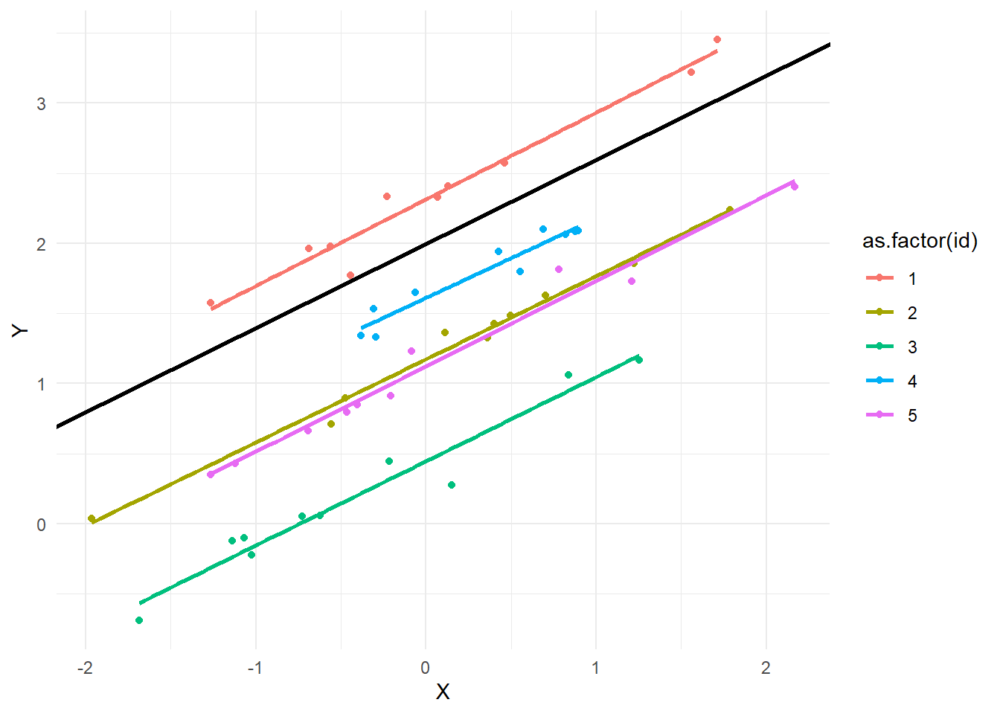
Let’s now do the same but with the true regression lines for each individual
head(u_0i, 5)[1] 0.2890801 -0.8181370 -1.5232732 -0.4288842 -0.8873405scenario1.data %>%
filter(id <= 5) %>%
ggplot(aes(x = X, y = Y, group = id)) +
geom_point(aes(color = as.factor(id))) +
geom_abline(intercept = gamma_00, slope = beta_1, color = "black", size = 1) + # overall regression line
geom_abline(intercept = gamma_00 + u_0i[1], slope = beta_1, color = "red", size = 1) + # for id = 1
geom_abline(intercept = gamma_00 + u_0i[2], slope = beta_1, color = "orange", size = 1) + # for id = 2
geom_abline(intercept = gamma_00 + u_0i[3], slope = beta_1, color = "green", size = 1) + # for id = 3
geom_abline(intercept = gamma_00 + u_0i[4], slope = beta_1, color = "blue", size = 1) + # for id = 4
geom_abline(intercept = gamma_00 + u_0i[5], slope = beta_1, color = "purple", size = 1) + # for id = 5
theme_minimal()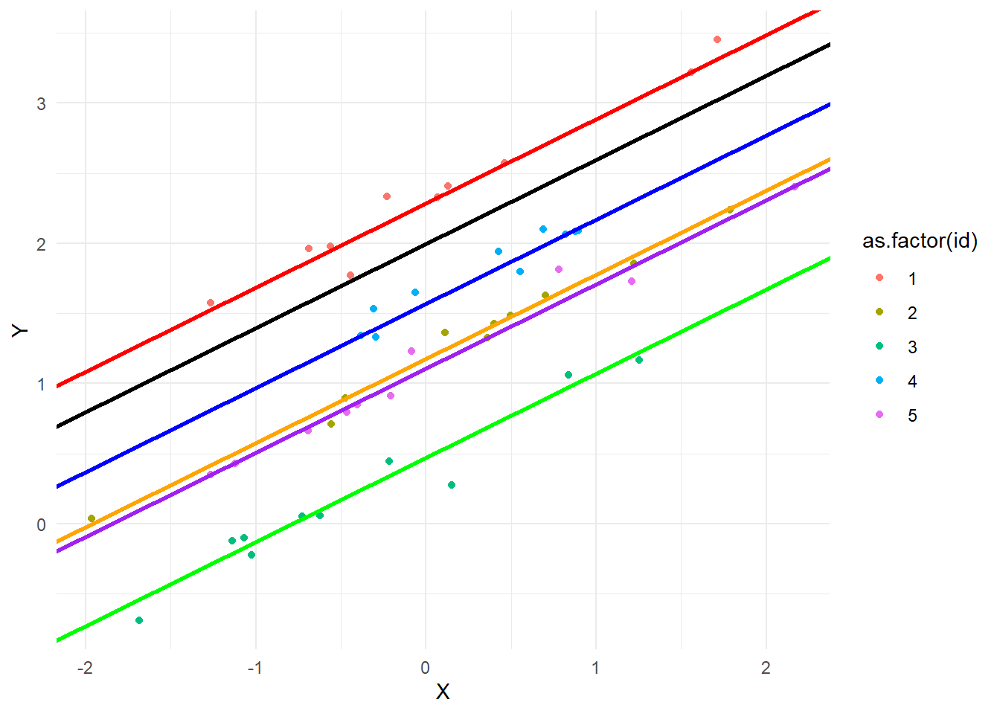
Let’s estimate the effect of \(X\) on \(Y\) using MLM
scenario1.MLM_reml <- lmer(Y ~ 1 + X + (1 | id), data = scenario1.data, REML = TRUE)
scenario1.MLM_mle <- lmer(Y ~ 1 + X + (1 | id), data = scenario1.data, REML = FALSE)
# as.numeric(VarCorr(scenario1.MLM_mle)$id[1]) # aligns with specification of sigma_u0Let’s now estimate the effect of \(X\) on \(Y\) using GEE
# displays initial regression estimate of GLM
scenario1.GEE_exch <- gee(Y ~ X, data = scenario1.data, id = id, family = gaussian(), corstr = "exchangeable")(Intercept) X
2.0072017 0.5996304 scenario1.GEE_ind <- gee(Y ~ X, data = scenario1.data, id = id, family = gaussian(), corstr = "independence")(Intercept) X
2.0072017 0.5996304 scenario1.GEE_ar <- gee(Y ~ X, data = scenario1.data, id = id, family = gaussian(), corstr = "AR-M")(Intercept) X
2.0072017 0.5996304 scenario1.GEE_uns <- gee(Y ~ X, data = scenario1.data, id = id, family = gaussian(), corstr = "unstructured") # with n = 100 convergence was not achieved(Intercept) X
2.0072017 0.5996304 # scenario1.GEE_fixed <- gee(Y ~ X, data = scenario1.data, id = id, family = gaussian(), corstr = "fixed") # takes very long to convergeLet’s compare the point estimates
# Extracting the coefficients
scenario1.coefs <- data.frame(
row.names = c("Intercept", "X"),
coef_MLM_reml = fixef(scenario1.MLM_reml),
coef_MLM_mle = fixef(scenario1.MLM_mle),
coef_GEE_exch = coef(scenario1.GEE_exch),
coef_GEE_ind = coef(scenario1.GEE_ind),
coef_GEE_ar = coef(scenario1.GEE_ar),
coef_GEE_uns = coef(scenario1.GEE_uns))
# Create nice table
knitr::kable(scenario1.coefs, digits = 3)| coef_MLM_reml | coef_MLM_mle | coef_GEE_exch | coef_GEE_ind | coef_GEE_ar | coef_GEE_uns | |
|---|---|---|---|---|---|---|
| Intercept | 2.007 | 2.007 | 2.007 | 2.007 | 2.007 | 2.007 |
| X | 0.600 | 0.600 | 0.600 | 0.600 | 0.600 | 0.600 |
The point estimates are essentially identical with \(n = 10.000\). However, efficiency/convergence rates may differ across working correlation structures, as unstructured did not convergence with \(n = 100\).
De interpretatie for the fixed effects is als volgt:
intercept: de gemiddelde angst (\(Y\)) over alle proefpersonen genomen \(\approx 2\), wanneer slaapproblemen (\(X\)) 0 zijn, waarbij variatie tussen proefpersonen genegeerd wordt. In technische termen, we nemen gelijke waarden aan voor de random effecten.
slope: voor een eenheid verandering in slaapproblemen (\(X\)), wordt verwacht dat angst (\(Y\)) verandert met \(\approx 0.6\), waarbij variatie tussen proefpersonen genegeerd wordt. In technische termen, we nemen gelijke waarden aan voor de random effecten.
2.2 Scenario 2: with between person differences in \(\bar{\mu}_{i}\)
SCM met een random intercept, time-varying \(X\) en met between-person verschillen in \(\bar{\mu}_{i}\) (de ene proefpersoon heeft een hogere gemiddelde dan een ander over de tijdspunten)
For the second DGM, using the multilevel notation (Raudenbusch and Bryk, 2002), we can specify the within person equation with the predictor within-person centered
\[Y_{it} = \beta_{0i} + \beta_1 (X_{it} - \bar{\mu}_{i}) + e_{it} \quad \text{where} \quad e_{it} \sim \mathcal{N}(0, \sigma^2_{e}), \text{iid}\]
Note that by using the within-person centered predictor \(X_{it} - \bar{\mu}_{i}\), we disentangle the within-person and between-person slopes, whereas the use of the non-centered predictor \(X_{it}\) would have yielded a weighted sum of the estimated slopes at both levels.
and between person equation
\[\beta_{0i} = \gamma_{00} + u_{0i} \quad \text{where} \quad u_{0i} \sim \mathcal{N}(0, \sigma^2_{u0})\]
By plugging the between person equation into the within-person equation we get the combined expression
\[Y_{it} = \gamma_{00} + u_{0i} + \beta_1 (X_{it} - \bar{\mu}_{i}) + e_{it}\]
where (1) \(\gamma_{00}\) is the overall intercept, (2) \(\beta_1\) is the fixed slope and (3) \(u_{0i}\) is the random intercept for individual \(i\).
Given that we want between person differences in the mean level of \(X\) over time, we may simulate \(X_{it}\) as such
\[X_{it} = \bar{\mu}_{i} + e_{X, it} \quad \text{where} \quad e_{X, it} \sim \mathcal{N}(0, \sigma^2_{X})\]
where
\[\bar{\mu}_{i} \sim \mathcal{N}(\mu_{\bar{\mu}}, \sigma^2_{\bar{\mu}})\]
Now we may, for instance, give the parameters arbitrary values In addition to the arbitrary values we chose for scenario 1 (note that I define the standarddeviations instead of the variances)
- \(\gamma_{00} = 2\)
- \(\beta_{1}= 0.6\)
- \(\sigma_{u0}= 1\)
- \(\sigma_{e}= 0.1\)
- \(\sigma_{X}= 1\)
We now have to also define
- \(\mu_{\bar{\mu}} = 3\)
- \(\sigma_{\bar{\mu}} = 1\)
Let us now simulate data according to data generating model 2
# Specify parameters
set.seed(123) # For reproducibility
n_i <- 1000 # Number of individuals
n_t <- 10 # Number of timepoints
n_obs <- n_i * n_t # Total number of observations
gamma_00 <- 2
beta_1 <- 0.6 # represents the within-person slope
sigma_u0 <- 1
sigma_e <- 0.1 # this may be unrealistic, but we want to see the effect of the estimation method
sigma_X <- 1
mu_mu_bar <- 3
sigma_mu_bar <- 1
# Simulate data
mu_bar_i = rnorm(n_i, mu_mu_bar, sigma_mu_bar)
u_0i = rnorm(n_i, 0, sigma_u0)
# Create a data frame to store the simulated data
scenario2.data <- data.frame()
for (i in 1:n_i) {
for (t in 1:n_t) {
X_it <- mu_bar_i[i] + rnorm(1, mean = 0, sd = sigma_X)
e_it <- rnorm(1, mean = 0, sd = sigma_e)
Y_it <- gamma_00 + u_0i[i] + beta_1 * (X_it - mu_bar_i[i]) + e_it
# Store the values in the data frame
scenario2.data <- rbind(scenario2.data, data.frame(id = i, time = t, X = X_it, Y = Y_it, mu_bar = mu_bar_i[i]))
}
}
head(scenario2.data) id time X Y mu_bar
1 1 1 1.9279206 0.7209328 2.439524
2 1 2 1.8979352 0.8011705 2.439524
3 1 3 2.6136602 1.0471560 2.439524
4 1 4 0.6326314 -0.1443026 2.439524
5 1 5 4.4855432 2.1757363 2.439524
6 1 6 1.6035250 0.5678964 2.439524first, we have to estimate \(\bar{\mu}_i\). One way to do this is by computing the sample mean \(\bar{X}_i\) for every individual. Now we can create the centered within clusters variable \(X_{it} - \bar{X}_{i}\)
scenario2.data <- scenario2.data %>%
group_by(id) %>%
mutate(X_bar = mean(X))
scenario2.data$X_cwc <- scenario2.data$X - scenario2.data$X_bar
scenario2.data$X_cwc_population <- scenario2.data$X - scenario2.data$mu_bar
head(scenario2.data)# A tibble: 6 × 8
# Groups: id [1]
id time X Y mu_bar X_bar X_cwc X_cwc_population
<int> <int> <dbl> <dbl> <dbl> <dbl> <dbl> <dbl>
1 1 1 1.93 0.721 2.44 2.12 -0.193 -0.512
2 1 2 1.90 0.801 2.44 2.12 -0.223 -0.542
3 1 3 2.61 1.05 2.44 2.12 0.493 0.174
4 1 4 0.633 -0.144 2.44 2.12 -1.49 -1.81
5 1 5 4.49 2.18 2.44 2.12 2.36 2.05
6 1 6 1.60 0.568 2.44 2.12 -0.517 -0.836Let’s plot the first 10 individuals with different colors for each participant and separate regression lines for each participant
scenario2.data %>%
filter(id <= 5) %>%
ggplot(aes(x = X_cwc, y = Y, group = id)) +
geom_point(aes(color = as.factor(id))) +
geom_smooth(method = "lm", se = FALSE, aes(color = as.factor(id))) +
geom_abline(intercept = gamma_00, slope = beta_1, color = "black", size = 1) +
theme_minimal()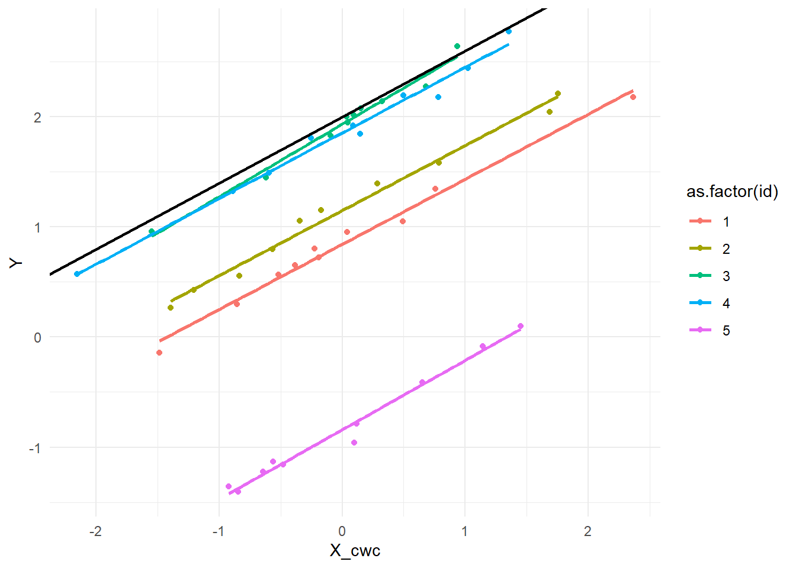
Let’s now do the same but with the true regression lines for each individual and make a Scatterplot of centered X and Y with true regression lines for each individual (first 5 individuals). First plot uses population mean centered values, whereas second plot uses sample mean centered values.
# show population values
head(u_0i, 5)
head(mu_bar_i, 5)
# True values of the mean of X
scenario2.data %>%
filter(id <= 5) %>%
ggplot(aes(x = X_cwc_population, y = Y, group = id)) +
geom_point(aes(color = as.factor(id))) +
geom_abline(intercept = gamma_00, slope = beta_1, color = "black", size = 1) + # overall regression line
geom_abline(intercept = gamma_00 + u_0i[1], slope = beta_1, color = "red", size = 1) + # for id = 1
geom_abline(intercept = gamma_00 + u_0i[2], slope = beta_1, color = "orange", size = 1) + # for id = 2
geom_abline(intercept = gamma_00 + u_0i[3], slope = beta_1, color = "green", size = 1) + # for id = 3
geom_abline(intercept = gamma_00 + u_0i[4], slope = beta_1, color = "blue", size = 1) + # for id = 4
geom_abline(intercept = gamma_00 + u_0i[5], slope = beta_1, color = "purple", size = 1) + # for id = 5
theme_minimal()
# Sample values of the mean of X
scenario2.data %>%
filter(id <= 5) %>%
ggplot(aes(x = X_cwc, y = Y, group = id)) +
geom_point(aes(color = as.factor(id))) +
geom_abline(intercept = gamma_00, slope = beta_1, color = "black", size = 1) + # overall regression line
geom_abline(intercept = gamma_00 + u_0i[1], slope = beta_1, color = "red", size = 1) + # for id = 1
geom_abline(intercept = gamma_00 + u_0i[2], slope = beta_1, color = "orange", size = 1) + # for id = 2
geom_abline(intercept = gamma_00 + u_0i[3], slope = beta_1, color = "green", size = 1) + # for id = 3
geom_abline(intercept = gamma_00 + u_0i[4], slope = beta_1, color = "blue", size = 1) + # for id = 4
geom_abline(intercept = gamma_00 + u_0i[5], slope = beta_1, color = "purple", size = 1) + # for id = 5
theme_minimal()[1] -0.99579872 -1.03995504 -0.01798024 -0.13217513 -2.54934277[1] 2.439524 2.769823 4.558708 3.070508 3.129288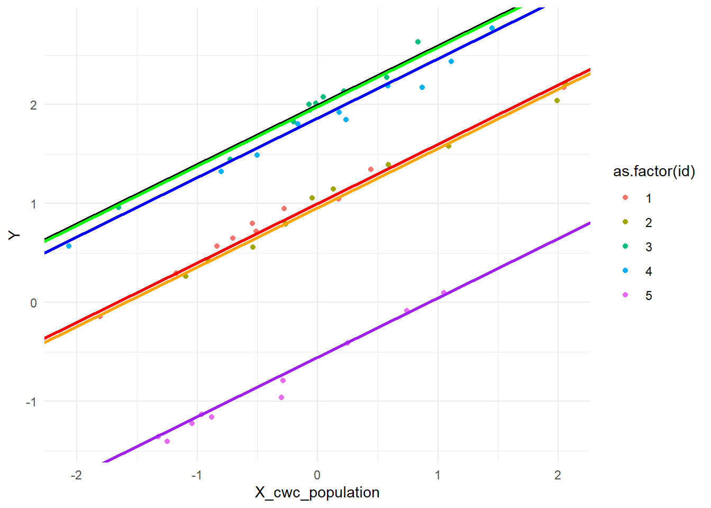
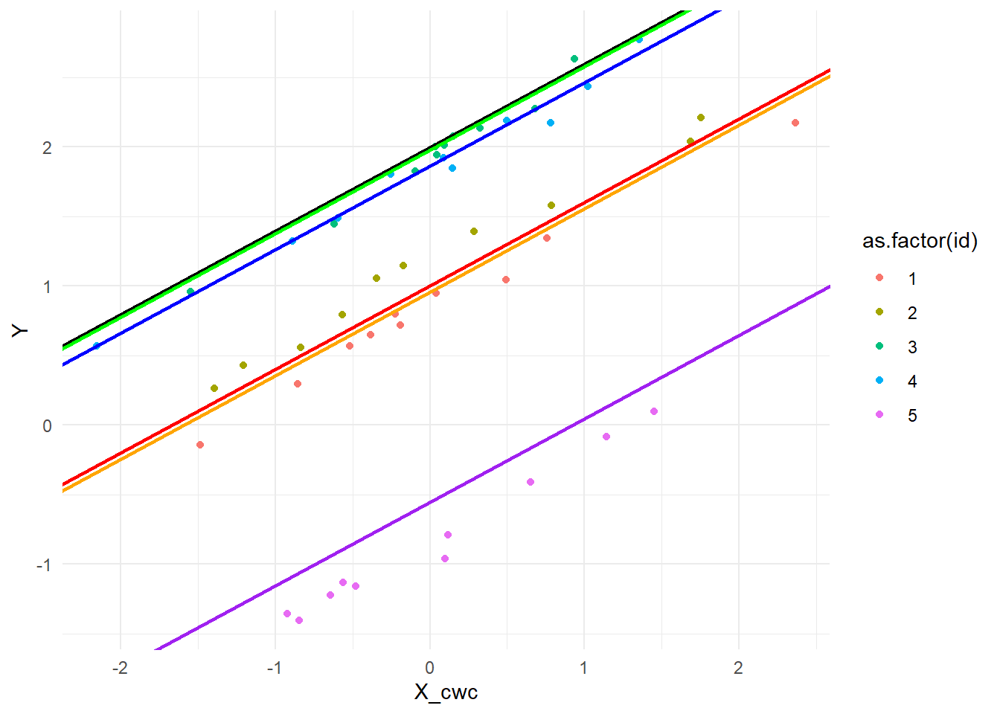
Let’s estimate the effect of \(X\) on \(Y\) using MLM
Now let’s fit the models
scenario2.MLM_reml <- lmer(Y ~ 1 + X_cwc + (1 | id), data = scenario2.data, REML = TRUE)
scenario2.MLM_mle <- lmer(Y ~ 1 + X_cwc + (1 | id), data = scenario2.data, REML = FALSE)
# as.numeric(VarCorr(scenario2.MLM.1a_mle)$id[1]) # aligns with specification of sigma_u0Let’s now estimate the effect of \(X_t\) on \(Y_t\) using GEE
# displays initial regression estimate of GLM
scenario2.GEE_exch <- gee(Y ~ X_cwc, data = scenario2.data, id = id, family = gaussian(), corstr = "exchangeable")(Intercept) X_cwc
2.0386534 0.6008025 scenario2.GEE_ind <- gee(Y ~ X_cwc, data = scenario2.data, id = id, family = gaussian(), corstr = "independence")(Intercept) X_cwc
2.0386534 0.6008025 scenario2.GEE_ar <- gee(Y ~ X_cwc, data = scenario2.data, id = id, family = gaussian(), corstr = "AR-M")(Intercept) X_cwc
2.0386534 0.6008025 scenario2.GEE_uns <- gee(Y ~ X_cwc, data = scenario2.data, id = id, family = gaussian(), corstr = "unstructured") # with n = 1000, working correlation not positive definite(Intercept) X_cwc
2.0386534 0.6008025 Let’s compare the point estimates
# Extracting the coefficients
scenario2.coefs <- data.frame(
row.names = c("Intercept", "X"),
coef_MLM_reml = fixef(scenario2.MLM_reml),
coef_MLM_mle = fixef(scenario2.MLM_mle),
coef_GEE_exch = coef(scenario2.GEE_exch),
coef_GEE_ind = coef(scenario2.GEE_ind),
coef_GEE_ar = coef(scenario2.GEE_ar),
coef_GEE_uns = coef(scenario2.GEE_uns))
# Create nice table
knitr::kable(scenario2.coefs, digits = 3)| coef_MLM_reml | coef_MLM_mle | coef_GEE_exch | coef_GEE_ind | coef_GEE_ar | coef_GEE_uns | |
|---|---|---|---|---|---|---|
| Intercept | 2.039 | 2.039 | 2.039 | 2.039 | 2.038 | 2.038 |
| X | 0.601 | 0.601 | 0.601 | 0.601 | 0.602 | 0.600 |
The point estimates are essentially identical with \(n = 1.000\) across all conditions. Note that for the unstructured working correlation matrix, the warning “Working correlation estimate not positive definite” was given.
Nu dat we de within-person centered predictor gebruiken is de interpretatie anders:
de gemiddelde angst (\(Y\)) over alle proefpersonen genomen \(\approx 2\), wanneer slaapproblemen (\(X\)) 0 zijn, waarbij variatie tussen proefpersonen genegeerd wordt. In technische termen, we nemen gelijke waarden aan voor de random effecten.
slope beta_1 (within-person interpretatie): In vergelijking met het persoonlijk gemiddelde van een persoon, gaat een eenheid toename in slaapproblemen gepaard met een toename van \(\approx 0.6\) in angst (\(Y\)), waarbij variatie tussen proefpersonen genegeerd wordt. In technische termen, we nemen gelijke waarden aan voor de random effecten.
2.3 Scenario 3: with relation between \(\beta_{0i}\) and \(\bar{\mu}_{i}\)
SCM met een random intercept, time-varying \(X\) en met between-person verschillen in \(\bar{\mu}_{i}\) (de ene proefpersoon heeft een hogere gemiddelde dan een ander over de tijdspunten) die gerelateerd zijn aan de intercept (van \(Y\))
For the third DGM, using the multilevel notation (Raudenbusch and Bryk, 2002), we can specify the within person equation
\[Y_{it} = \beta_{0i} + \beta_1 (X_{it} - \bar{\mu}_{i}) + e_{it} \quad \text{where} \quad e_{it} \sim \mathcal{N}(0, \sigma^2_{e}), \text{iid}\]
and between person equation
\[\beta_{0i} = \gamma_{00} + \gamma_{01} \bar{\mu}_i + u_{0i} \quad \text{where} \quad u_{0i} \sim \mathcal{N}(0, \sigma^2_{u0})\]
in which we predict the within-person mean on the outcome from the within-person mean on the predictor. In other words, by including the between-person slope \(\gamma_{01}\) multiplied by the person mean \(\bar{\mu}_i\), we could investigate contextual effects.
By plugging the between person equation into the within-person equation we get the combined expression
\[Y_{it} = \gamma_{00} + \gamma_{01} \bar{\mu}_i + u_{0i} + \beta_1 (X_{it} - \bar{\mu}_{i}) + e_{it}\]
where (1) \(\gamma_{00}\) is the overall intercept, (2) \(\beta_1\) is the fixed slope and (3) \(u_{0i}\) is the random intercept for individual \(i\).
Given that we want between person differences in the mean level of \(X\) over time, we may simulate \(X_{it}\) as such
\[X_{it} = \bar{\mu}_{i} + e_{X, it} \quad \text{where} \quad e_{X, it} \sim \mathcal{N}(0, \sigma^2_{X})\]
where
\[\bar{\mu}_{i} \sim \mathcal{N}(\mu_{\bar{\mu}}, \sigma^2_{\bar{\mu}})\]
Now we may, for instance, give the parameters arbitrary values In addition to the arbitrary values we chose for scenario 2 (note that I define the standard deviations instead of the variances)
- \(\gamma_{00} = 2\)
- \(\beta_{1}= 0.6\)
- \(\sigma_{u0}= 1\)
- \(\sigma_{e}= 0.1\)
- \(\sigma_{X}= 1\)
- \(\mu_{\bar{\mu}} = 3\)
- \(\sigma_{\bar{\mu}} = 1\)
we have to define
- \(\gamma_{01} = 0.8\)
Let us now simulate data according to data generating model 3
# Specify parameters
set.seed(123) # For reproducibility
n_i <- 1000 # Number of individuals
n_t <- 10 # Number of timepoints
n_obs <- n_i * n_t # Total number of observations
gamma_00 <- 2
beta_1 <- 0.6 # represents the within-person slope
sigma_u0 <- 1
sigma_e <- 0.1 # this may be unrealistic, but we want to see the effect of the estimation method
sigma_X <- 1
mu_mu_bar <- 3
sigma_mu_bar <- 1
gamma_01 <- 0.8 # represents the between-person slope
# Simulate data
mu_bar_i = rnorm(n_i, mu_mu_bar, sigma_mu_bar)
u_0i = rnorm(n_i, 0, sigma_u0)
# Create a data frame to store the simulated data
scenario3.data <- data.frame()
for (i in 1:n_i) {
for (t in 1:n_t) {
X_it <- mu_bar_i[i] + rnorm(1, mean = 0, sd = sigma_X)
e_it <- rnorm(1, mean = 0, sd = sigma_e)
Y_it <- gamma_00 + gamma_01 * mu_bar_i[i] + u_0i[i] + beta_1 * (X_it - mu_bar_i[i]) + e_it
# Store the values in the data frame
scenario3.data <- rbind(scenario3.data, data.frame(id = i, time = t, X = X_it, Y = Y_it, mu_bar = mu_bar_i[i]))
}
}
head(scenario3.data) id time X Y mu_bar
1 1 1 1.9279206 2.672552 2.439524
2 1 2 1.8979352 2.752790 2.439524
3 1 3 2.6136602 2.998775 2.439524
4 1 4 0.6326314 1.807317 2.439524
5 1 5 4.4855432 4.127356 2.439524
6 1 6 1.6035250 2.519516 2.439524first, we have to estimate \(\bar{\mu}_i\). One way to do this is by computing the sample mean \(\bar{X}_i\) for every individual. Now we can create the centered within clusters variable \(X_{it} - \bar{X}_{i}\)
scenario3.data <- scenario3.data %>%
group_by(id) %>%
mutate(X_bar = mean(X))
scenario3.data$X_cwc <- scenario3.data$X - scenario2.data$X_bar
scenario3.data$X_cwc_population <- scenario3.data$X - scenario2.data$mu_bar
head(scenario3.data)# A tibble: 6 × 8
# Groups: id [1]
id time X Y mu_bar X_bar X_cwc X_cwc_population
<int> <int> <dbl> <dbl> <dbl> <dbl> <dbl> <dbl>
1 1 1 1.93 2.67 2.44 2.12 -0.193 -0.512
2 1 2 1.90 2.75 2.44 2.12 -0.223 -0.542
3 1 3 2.61 3.00 2.44 2.12 0.493 0.174
4 1 4 0.633 1.81 2.44 2.12 -1.49 -1.81
5 1 5 4.49 4.13 2.44 2.12 2.36 2.05
6 1 6 1.60 2.52 2.44 2.12 -0.517 -0.836Let’s plot the first 10 individuals with different colors for each participant and separate regression lines for each participant
scenario3.data %>%
filter(id <= 5) %>%
ggplot(aes(x = X_cwc, y = Y, group = id)) +
geom_point(aes(color = as.factor(id))) +
geom_smooth(method = "lm", se = FALSE, aes(color = as.factor(id))) +
geom_abline(intercept = gamma_00, slope = beta_1, color = "black", size = 1) +
theme_minimal()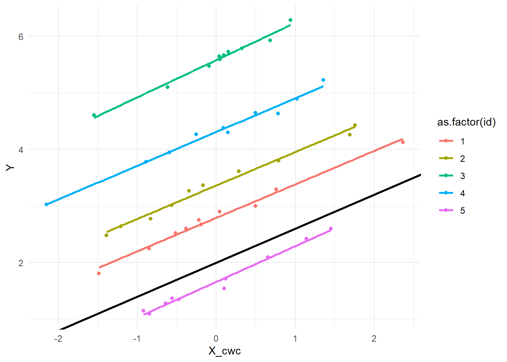
Let’s now do the same but with the true regression lines for each individual and make a Scatterplot of centered X and Y with true regression lines for each individual (first 5 individuals). First plot uses population mean centered values, whereas second plot uses sample mean centered values.
head(u_0i, 5)
head(mu_bar_i, 5)
X_bar_i <- unique(scenario3.data$X_bar)
# Population mean of X for each person
scenario3.data %>%
filter(id <= 5) %>%
ggplot(aes(x = X_cwc_population, y = Y, group = id)) +
geom_point(aes(color = as.factor(id))) +
geom_abline(intercept = gamma_00, slope = beta_1, color = "black", size = 1) + # overall regression line
geom_abline(intercept = gamma_00 + gamma_01 * mu_bar_i[1] + u_0i[1], slope = beta_1, color = "red", size = 1) + # for id = 1
geom_abline(intercept = gamma_00 + gamma_01 * mu_bar_i[2] + u_0i[2], slope = beta_1, color = "orange", size = 1) + # for id = 2
geom_abline(intercept = gamma_00 + gamma_01 * mu_bar_i[3] + u_0i[3], slope = beta_1, color = "green", size = 1) + # for id = 3
geom_abline(intercept = gamma_00 + gamma_01 * mu_bar_i[4] + u_0i[4], slope = beta_1, color = "blue", size = 1) + # for id = 4
geom_abline(intercept = gamma_00 + gamma_01 * mu_bar_i[5] + u_0i[5], slope = beta_1, color = "purple", size = 1) + # for id = 5
theme_minimal()
# Sample mean of X for each person
scenario3.data %>%
filter(id <= 5) %>%
ggplot(aes(x = X_cwc, y = Y, group = id)) +
geom_point(aes(color = as.factor(id))) +
geom_abline(intercept = gamma_00, slope = beta_1, color = "black", size = 1) + # overall regression line
geom_abline(intercept = gamma_00 + gamma_01 * mu_bar_i[1] + u_0i[1], slope = beta_1, color = "red", size = 1) + # for id = 1
geom_abline(intercept = gamma_00 + gamma_01 * mu_bar_i[2] + u_0i[2], slope = beta_1, color = "orange", size = 1) + # for id = 2
geom_abline(intercept = gamma_00 + gamma_01 * mu_bar_i[3] + u_0i[3], slope = beta_1, color = "green", size = 1) + # for id = 3
geom_abline(intercept = gamma_00 + gamma_01 * mu_bar_i[4] + u_0i[4], slope = beta_1, color = "blue", size = 1) + # for id = 4
geom_abline(intercept = gamma_00 + gamma_01 * mu_bar_i[5] + u_0i[5], slope = beta_1, color = "purple", size = 1) + # for id = 5
theme_minimal()[1] -0.99579872 -1.03995504 -0.01798024 -0.13217513 -2.54934277[1] 2.439524 2.769823 4.558708 3.070508 3.129288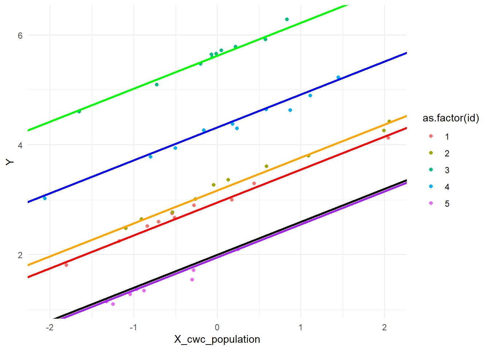
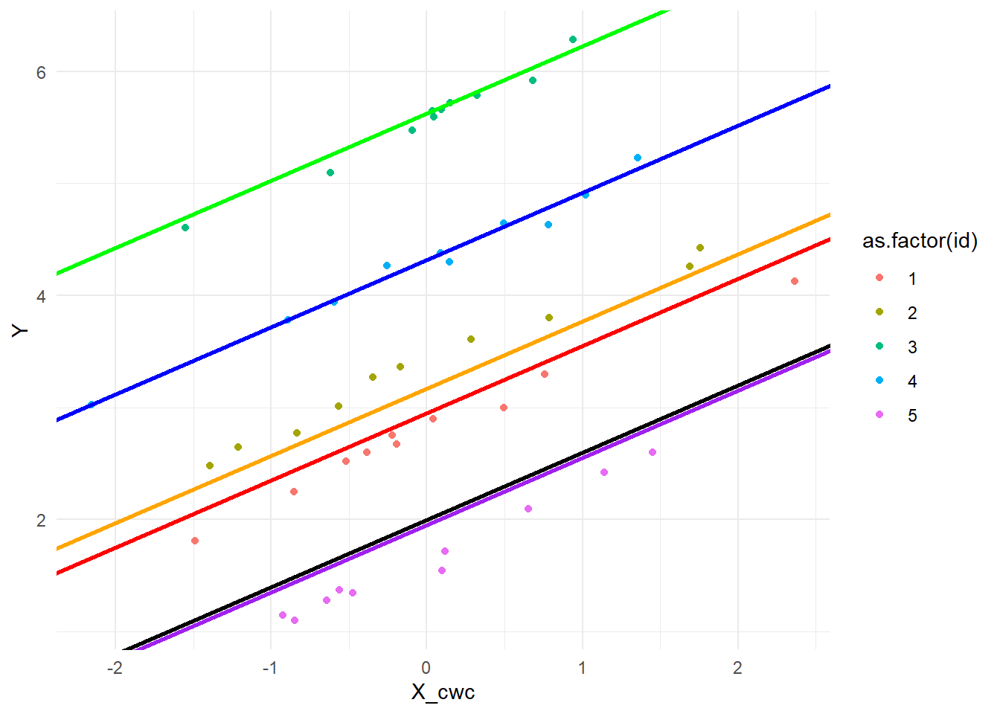
Let’s estimate the effect of \(X\) on \(Y\) using MLM
Now let’s fit the models
scenario3.MLM_reml <- lmer(Y ~ 1 + X_cwc + X_bar + (1 | id), data = scenario3.data, REML = TRUE)
scenario3.MLM_mle <- lmer(Y ~ 1 + X_cwc + X_bar + (1 | id), data = scenario3.data, REML = FALSE)
# summary(scenario3.MLM_reml)
# as.numeric(VarCorr(scenario3.MLM_mle)$id[1]) # aligns with specification of sigma_u0Let’s now estimate the effect of \(X\) on \(Y\) using GEE
# displays initial regression estimate of GLM
scenario3.GEE_exch <- gee(Y ~ X_cwc + X_bar, data = scenario3.data, id = id, family = gaussian(), corstr = "exchangeable")(Intercept) X_cwc X_bar
1.8941797 0.6008025 0.8489658 scenario3.GEE_ind <- gee(Y ~ X_cwc + X_bar, data = scenario3.data, id = id, family = gaussian(), corstr = "independence")(Intercept) X_cwc X_bar
1.8941797 0.6008025 0.8489658 scenario3.GEE_ar <- gee(Y ~ X_cwc + X_bar, data = scenario3.data, id = id, family = gaussian(), corstr = "AR-M")(Intercept) X_cwc X_bar
1.8941797 0.6008025 0.8489658 scenario3.GEE_uns <- gee(Y ~ X_cwc + X_bar, data = scenario3.data, id = id, family = gaussian(), corstr = "unstructured") # with n = 1000, working correlation not positive definite(Intercept) X_cwc X_bar
1.8941797 0.6008025 0.8489658 Let’s compare the point estimates
# Extracting the coefficients
scenario3.coefs <- data.frame(
row.names = c("Intercept", "X", "X_bar"),
coef_MLM_reml = fixef(scenario3.MLM_reml),
coef_MLM_mle = fixef(scenario3.MLM_mle),
coef_GEE_exch = coef(scenario3.GEE_exch),
coef_GEE_ind = coef(scenario3.GEE_ind),
coef_GEE_ar = coef(scenario3.GEE_ar),
coef_GEE_uns = coef(scenario3.GEE_uns))
# Create nice table
knitr::kable(scenario3.coefs, digits = 3)| coef_MLM_reml | coef_MLM_mle | coef_GEE_exch | coef_GEE_ind | coef_GEE_ar | coef_GEE_uns | |
|---|---|---|---|---|---|---|
| Intercept | 1.894 | 1.894 | 1.894 | 1.894 | 1.888 | 1.885 |
| X | 0.601 | 0.601 | 0.601 | 0.601 | 0.602 | 0.601 |
| X_bar | 0.849 | 0.849 | 0.849 | 0.849 | 0.851 | 0.852 |
Again, the point estimates are essentially the same across all methods with \(n = 1.000\). As a reminder, we specified the overall intercept \(\gamma_{00} = 2\), the fixed within-person slope \(\beta_1 = 0.6\), and the between person slope \(\gamma_{01} = 0.8\). The point estimates are reasonably to the true values. Although the intercept is consistently off by more than 0.1.
Could this be the result of centering with the sample mean?
lme4::fixef(lmer(Y ~ 1 + X_cwc_population + mu_bar + (1 | id), data = scenario3.data, REML = TRUE)) (Intercept) X_cwc_population mu_bar
1.7755119 0.6007916 0.8879987 lme4::fixef(lmer(Y ~ 1 + X_cwc_population + mu_bar + (1 | id), data = scenario3.data, REML = FALSE)) (Intercept) X_cwc_population mu_bar
1.7755119 0.6007916 0.8879987 So no, centering with the population mean seems to make the problem even worse.
When increasing \(n\) to 10.000, the point estimates are even worse: the intercept is consistently 3.666 (except for GEE with independence), the fixed within-person slope is 0.6, and the between person slope is 0.244 (except for GEE with independence). Even when centering with the population mean, the point estimates do not improve.
3 Including Covariates \(Z\): no bias?
Nu zullen we verder bouwen op scenario 3 en een covariaat \(Z\) toevoegen aan het model, maar verneemelijk nog zonder dat dit biased estimates veroorzaakt. Hierbij zullen we in scenario 4 een time-invariante covariaat \(Z\) toevoegen, in scenario 5 een time-varying exogenous covariaat \(Z\) toevoegen.
3.1 Scenario 4: Time-invariant \(Z\)
In dit scenario is \(Z\) een moderator in de relatie tussen \(X\) en \(Y\).
Note: Er zijn in principe vier opties voor een time-invariante covariaat \(Z\). Zo kunnen we een confounder toevoegen, een mediator toevoegen, een moderator toevoegen of een collider toevoegen. In dit geval zullen we een moderator toevoegen om te kijken of het toevoegen van time-invariant endogene covariaat ook kan leiden tot biased estimates (en dus niet alleen maar endogenous time-varying covariates).
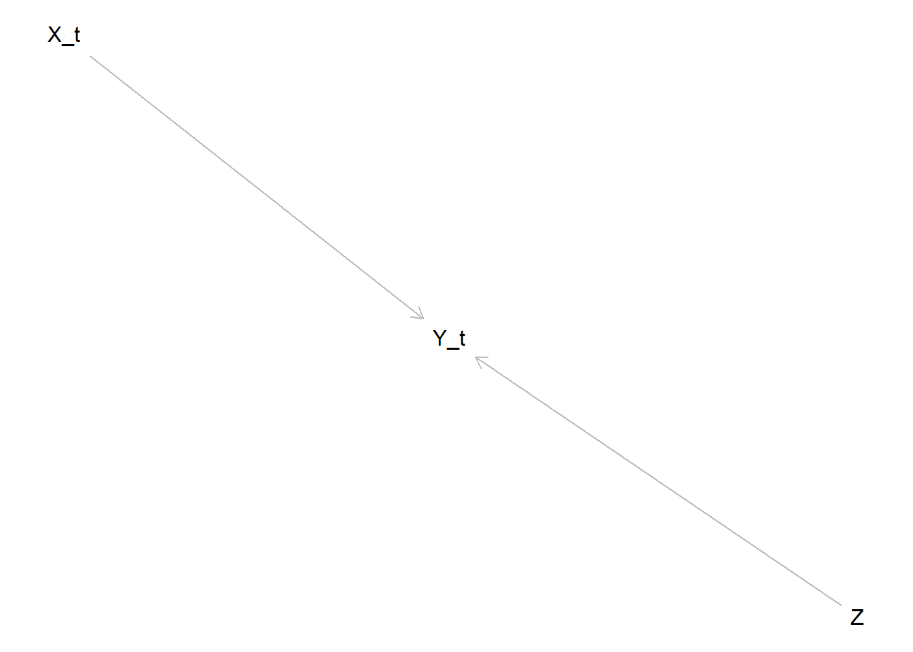
3.2 Scenario 5: TV Exogenous \(Z\)
In dit scenario is \(Z\) een exogene covariaat: (1) \(Z_t\) een exogene covariaat die alleen een effect heeft op \(Y_{t+1}\) of (2) \(Z_t\) een time-varying confounder in de relatie tussen \(X_t\) en \(Y_{t+1}\)
Note. Een time-varying exogene covariaat beïnvloedt de uitkomst variabele \(Y\) en/of de exposure \(X\), maar wordt zelf niet beïnvloed door \(Y\) of andere factoren in het model.
In deze DAG is de TV covariaat een \(Z_t\) een exogene covariaat die alleen een effect heeft op \(Y_{t+1}\)
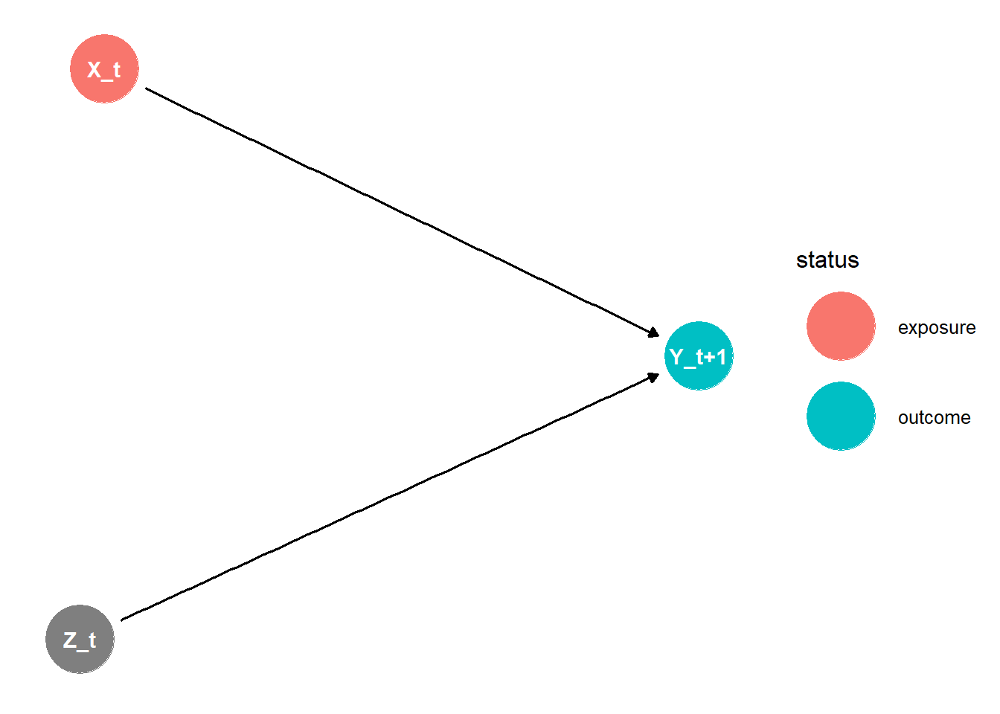
In deze DAG is de TV exogene covariaat \(Z_t\) een confounder in het effect van \(X_{t+1}\) op \(Y_{t+1}\)
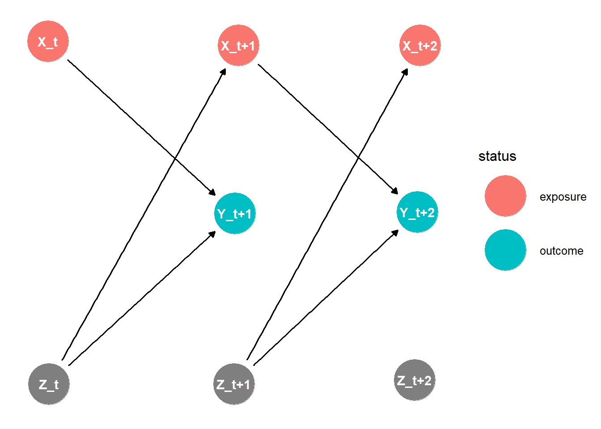
Welk scenario is hier het meest nuttig? of allebei?
4 Including TV Endogenous Covariates \(Z\): bias?
Nu zullen we een time-varying endogenous covariates toevoegen aan het baseline model 3 om te kijken of, zoals Qian et al. (2020) aangeven, de fixed parameter estimates biased worden.
4.1 Scenario 6: TV confounder
In dit scenario is \(Z_{t+1}\) een confounder in de relatie tussen \(X_{t}\) en \(X_{t+2}\)
Note. Een time-varying endogene covariaat is niet onafhankelijk van eerdere waarden van de uitkomst variabele \(Y\) en/of de exposure \(X\). In dit geval is \(Z\) een time-varying confounder, wat Qian et al. (2020) definieert als: “a covariate that is affected by previous treatment (hence is endogenous) and affects future treatment assignment.”
- Waarom wordt dit een confounder genoemd? Confounders zijn toch exogeen?
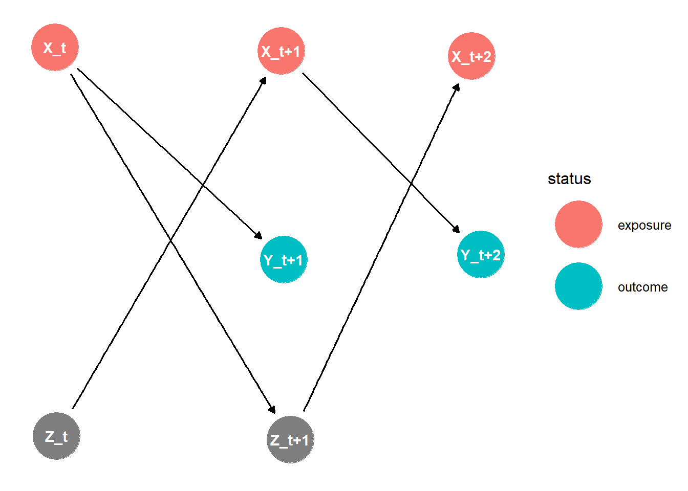
4.2 Scenario 7: TV mediator
In dit scenario is \(Z_{t+1}\) een mediator in de relatie tussen \(X_t\) en \(Y_{t+2}\).
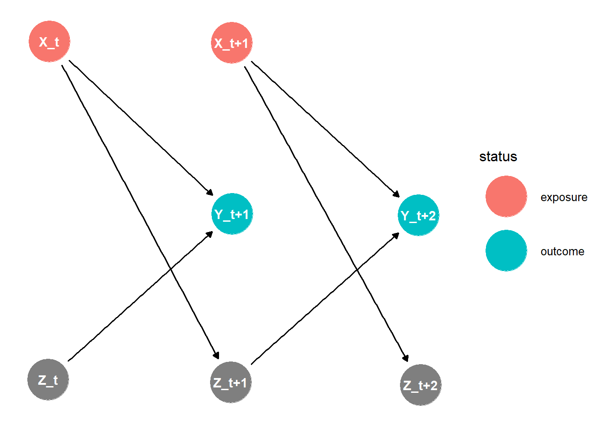
4.3 Scenario 8: TV moderator
In dit scenario is \(Z\) een moderator in de relatie tussen \(X_t\) en \(Y_{t+1}\).
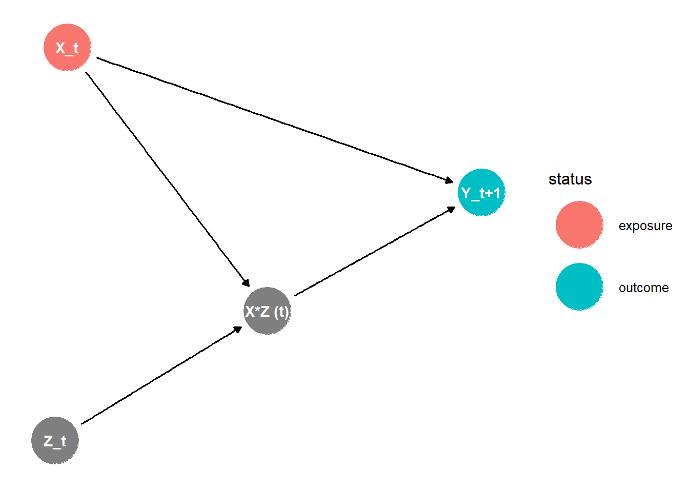
5 Including a Random Slope
Bij de vorige scenarios hebben we gekeken naar het effect van verschillende covariaaten in modellen met alleen een random intercept. In de volgende scenarios zullen we hier ook een random slope aan toevoegen.
…
6 Including autocorrelation
Ten opzichte van de vorige scenarios voegen we nu een autocorrelatie toe aan de data. Dit is plausibel in real-world scenarios, omdat de uitkomst van een bepaalde tijd vaak afhankelijk is van de uitkomst van de vorige tijd.
…